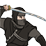

Requires

Enables
- Buildings:

- Units: 


Basic Building Statistics (can be modified by difficulty level, arts, skills, traits and retainers)
- Cost: 2200
- +3 to provincial happiness
- +350 to wealth from commerce in this province
- Enables recruitment of Rank 1 ninja
Clan Effects
- Each stealth chain building enables you to sustain one additional ninja (to a maximum of 5)
Description
Respect, honour and profit drink at the same inn.
A town with no crime is too poor to have anything worth stealing! Crime syndicates, however, are not about theft: they provide all kinds of illicit and enjoyable services to the local people, even as they intimidate troublesome individuals into keeping quiet. The syndicate has a positive effect on wealth, give or take, and it aids in procuring the services of a dangerous class of men: battlefield ninjas. Japanese crime syndicates, the yakuza, have a long tradition and can trace their origins back to the era of the Tokugawa Shogunate and earlier. The name is deliberately ironic: a portmanteau of the Japanese for eight, nine and three, a losing hand at cards. From their start as gamblers, the yakuza became a mirror of samurai society, with their own codes of honour. Yakuza are famed for their tattoos, the elaborate designs showing that the wearer has the strength to take the pain of his decorative work. Other than yakuza, the only Japanese group to regularly carry tattoos are firemen. Tattoos are a reason for ordinary Japanese to be suspicious of strangers.